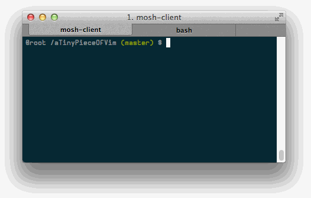

|
Four things come not back: the spoken word, the sped arrow, the past life and the pushed commit message.
So let's enable auto spell checking on your commit messages. It will look like this:

Meet Vim spell checker
Spell checker is one of this feature only available on Vim (not Vi). You can quickly enable it by simply running this on Vim command line:
:set spell
Auto spell check your commit messages
Now, to enable it ONLY when you are going to commit something with "git commit", add this line to your .vimrc:
autocmd
BufNewFile,BufRead
COMMIT_EDITMSG
set
spell
There are nice tricks on Vim spell checker, like adding words to your own thesaurus and getting suggestion to replace a word. You can find more about it here.
Cheers,
@FelippeNardi
P.S.: The newsletter is now open sourced on Github. If you want to know more about what tools I use to build it, contribute with next issues, jump to the github link below!
P.P.S.: Are you reading this on mobile, *|FNAME|*? I wanted to know if it is nice to read or if it looks crap on mobile. Just let me know :)
|